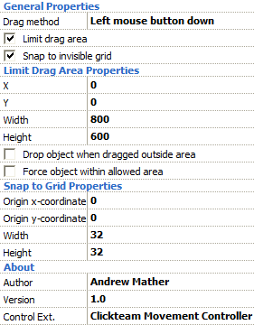

This movement provides a familiar, mouse-controlled drag and drop behaviour. A draggable object can be restricted to an area (much like the Mouse Controlled movement) as well as limited to placement on a grid. The behaviour of the object can be fine-tuned. Power users can disable mouse control altogether and start/stop dragging via the Event Editor.
For a simple drag and drop movement with no restrictions, where the object is dragged by holding the left mouse button down, no further configuration is necessary.
If you wish to change the button and method used to initiate dragging, or restrict the dragging in any way, select the appropriate properties as described below. Dragging is always initiated by the user clicking on the object; if the object has fine collision detection enabled (default) then the user must also click on a non-transparent part of the object.
If the user has chosen to swap the mouse buttons (e.g. for left-handed use) then the button used to initiate dragging is also swapped. This is for consistency and usability reasons; the 'left' button is actually the primary/selection button and 'right' the secondary/context menu button, rather than the buttons physically on the left/right side of the mouse.
While the object is being dragged the Walking animation will play. When it is stationary the Stopped animation plays.

Figure 1: Movement properties for the Drag and Drop Movement.
General Properties
Drag method: indicates how the user drags this object. The following methods are possible:
Limit drag area: limit the area in which you can drag the object. Ticking this displays the Limit Drag Area Properties section.
Snap to invisible grid: the object snaps to points on a grid as it is dragged. Ticking this displays the Snap to Grid Properties section.
Limit Drag Area Properties
The object can not be dragged outside of the area you set in this section.
X: X position of the left side of the area.
Y: Y position of the top side of the area.
W: width of the area.
H: height of the area.
Drop object when dragged outside area: if ticked, when the user attempts to drag the object outside of the defined area it will automatically be dropped. When unticked, the object is only dropped when the user drops it (or the movement is Stopped).
Force object within allowed area: by default the limited area takes effect only while the object is being dragged. Ticking this property forces the object to stay within the area at all times; for example, it cannot be moved outside the area with a Set Position action.
Snap to Grid Properties
Origin x-coordinate: X position of the grid's origin. Note: the grid extends infinitely to the left of this point. If you wish to prevent the object being dragged past this point, use the Limit drag area property.
Origin y-coordinate: Y position of the grid's origin. Note: the grid extends infinitely above this point. If you wish to prevent the object being dragged past this point, use the Limit drag area property.
Width: width of the grid.
Height: height of the grid.